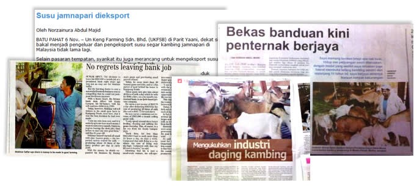

Intro

Banyak kisah-kisah kejayaan usahawan-usahawan tani ini dipaparkan, sama ada di akhbar mahupun TV. Kisah-kisah ini amat mengujakan kepada saya, kerana saya amat meminati bidang pertanian dan penternakan. Sememangnya, sudah lama saya menyimpan hasrat untuk menceburkan diri di dalam bidang pertanian dan juga penternakan ini. Tetapi, disebabkan saya bekerja makan gaji.. maka niat tersebut terpaksa dipendamkan.
Hasrat Terbantut....!
Ditambah lagi dengan kekurangan sumber maklumat tentang bagaimana hendak memulakan serta menceburkan diri di dalam projek pertanian & penternakan ini. Menyebabkan, hasrat saya untuk bergelar seorang usahawan tani yang berjaya terbenam
Sehinggalah pada suatu hari, sewaktu saya pulang ke kampung di Melaka,saya telah terserempak dengan seorang pakcik yang menetap di kampung saya. Saya gelarkan dia pakcik H, sejak dulu lagi, saya memang tahu pakcik H ini ada menternak kambing. tapi pada waktu itu, saya tidak ambil peduli sangat.. maklumlah.. orang kampung bela kambing... biasalah kan?
Dulu, pakcik H ini membela 5 ekor kambing.. tapi, setelah 7 tahun berlalu, bilangan kambingnya telah mencecah 1,000 ekor. Pergh!! Saya memang betul-betul tidak sangka.. pakcik H yang dulu saya pandang hanyalah seorang "pakcik kampung yang biasa-biasa".. kini telah bertukar menjadi seorang penternak kambing yang sangat berjaya!.
Perkara ini telah membuka minda dan fikiran saya untuk melihat bidang penternakan kambing ini dengan lebih luas & positif. Saya mula mendekati pakcik H dan mula mempelajari serba sedikit mengenai selok belok penternakan kambing. Alhamdulilah.. pakcik H tidak kedekut ilmu dan sudi berkongsi pengalaman beliau di dalam usaha menternak kambing.
Saya sangat gembira dan bersyukur mengenali beliau, banyak perkara saya belajar dari beliau dan kini, saya menganggap beliau sebagai salah seorang mentor saya di dalam bidang penternakan kambing.
Selepas beberapa pertemuan dengan pakcik H, saya mula mempertimbangkan dengan serius tentang hasrat saya yang ingin menjadi seorang usahawan agro yang berjaya sejak dulu lagi. Untuk itu, saya mula mengiatkan usaha saya mencari lebih banyak info serta ilmu tentang penternakan kambing ini dengan membaca buku , menyertai kursus dan seminar penternakan kambing anjuran badan-badan kerajaan dan juga swasta.Memulakan Langkah....!
Setelah beberapa bulan mentelaah ilmu penternakan kambing, saya pun memulakan langkah pertama saya di dalam bidang penternakan kambing dengan bermodalkan RM7,000 hasil daripada wang simpanan saya. Dengan modal tersebut, saya mula membina kandang kambing dan juga membeli 5 ekor kambing betina dan seekor kambing jantan jamnapari..
Alhamdulilah... berbekalkan ilmu yang saya perolehi dari buku, seminar serta tunjuk ajar dari pakcik H. Saya tidak banyak menghadapi masalah di dalam mengusahakan projek penternakan kambing ini. Dalam masa 4 bulan.. dari 6 ekor kambing, ternakan saya telah bertambah menjadi 10 ekor. Selepas hampir setahun mengusahakan penternakan kambing, bilangan ternakan saya sudah mencapai jumlah 20 ekor.
Jika hendak diukurkan tahap kejayaan saya.. sememangnya.. perjalanan saya masih jauh. Tapi saya sangat optimis dan percaya , berbekalkan usaha yang gigih serta ilmu yang betul.. kita pasti akan BERJAYA!
Melihatkan hasil ternakan kambing saya... membuatkan saya terfikir. Sudah pastinya, ada ramai lagi insan diluar sana yang mengalami nasib yang hampir sama dengan saya. Mereka minat untuk menceburkan diri di dalam bidang penternakan... tetapi malang , tidak mempunyai mentor serta tidak mempunyai sumber maklumat yang mencukupi menyebabkan , niat mereka untuk memulakan penternakan kambing terbantut. Mungkin anda adalah salah seorang daripada mereka?
Untuk itu, saya telah mengambil inisiatif, dengan berusaha, mengumpulkan semula maklumat-maklumat yang pernah saya perolehi dulu dan menghimpunkannya, dan akhirnya, jadilah ia sebuah panduan yang lengkap tentang.. “Bagaimana memulakan penternakan kambing?”.
Semua maklumat yang saya perolehi dari buku-buku, artikel-artikel, seminar-seminar dan juga serba sedikit dari pengalaman sendiri dan juga pengalaman-pengalaman daripada penternak lain.. kesemuanya telah saya himpunkan dan susunkan ia hingga menjadi sebuah ebook panduan yang lengkap yang saya namakan...